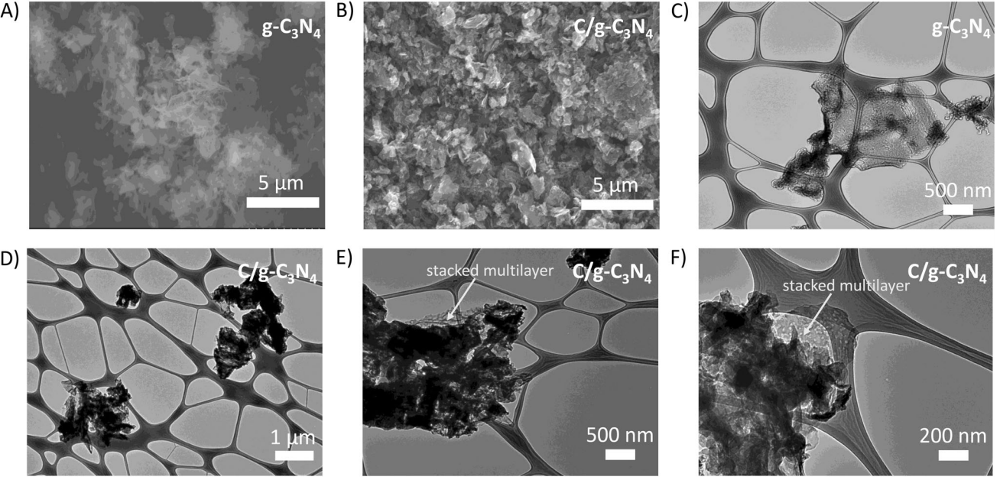
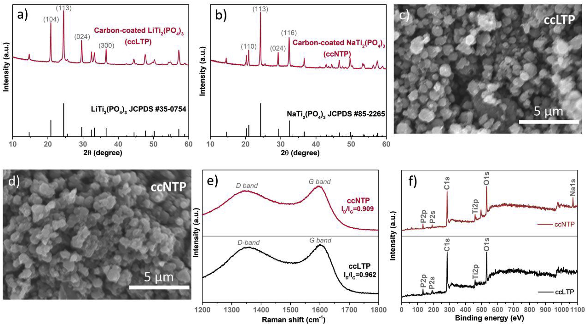
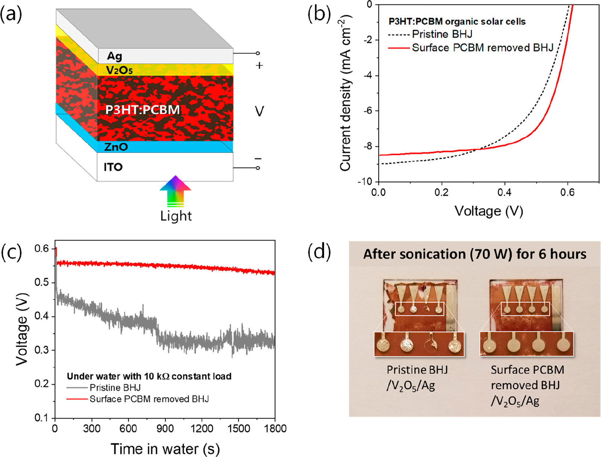
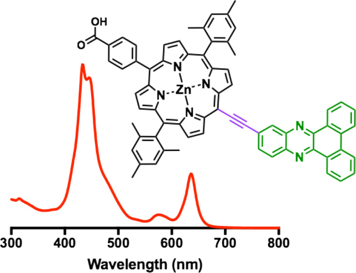
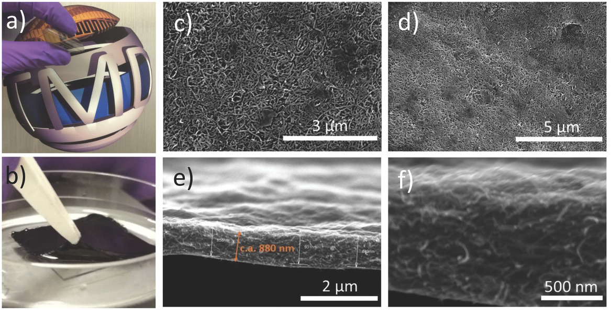

|
Christopher Karpovich
Ph.D. Candidate, Massachusetts Institute of Technology (MIT)
Materials Science and Engineering, Machine Learning
B.S. Yale University (2020)
Chemical Engineering (Computer Science concentration)
I am a 1st year Ph.D. student at MIT, advised by Elsa Olivetti.
My research lies in the intersection of machine learning and materials science, focused on applying novel methods in
natural language processing data science to materials informatics. I am interested in industry opportunities related
to machine learning research, software engineering, and data science.
Email /
Google Scholar /
LinkedIn
|
|
|

|
A promising carbon/g-C3N4 composite negative electrode for a long-life sodium-ion battery
Weng, G.; Xie, Y.; Wang, H.; Karpovich, C.; Lipton, J.; Zhu, J.; Kong, J.; Pfefferle, L.; Taylor, A. D.
Angewandte Chemie International Edition, 2019
We strategically apply a facile one‐pot heating of a mixture of low‐cost urea and asphalt to yield stacked multilayer C/g‐C3N4 (carbon-coated graphitic carbon nitride nanosheet) composites with improved Na‐storage capacity (about 2 times higher than that of g‐C3N4, up to 254 mAh/g), rate capability and cyclability. A C/g‐C3N4 sodium‐ion full cell demonstrates high Coulombic efficiency (~99.8%) and a negligible capacity fading over 14,000 cycles at 1 A/g.
|
|

|
A highly efficient perovskite photovoltaic-aqueous Li/Na-ion battery system
Weng, G.-M.; Kong, J.; Wang, H.; Karpovich, C.; Lipton, J.; Antonio, F.; Fishman, Z.; Wang, H.; Yuan, W.; Taylor, A. D.
Energy Storage Materials, 2019
We significantly improve the rate performance of the battery electrodes by asphalt-derived carbon coating, and strategically couple high-efficiency n-i-p type perovskite solar cells with aqueous lithium and sodium (Li/Na)-ion batteries, for the first time, to create a low-cost and high-performance photovoltaic battery system.
|
|

|
Underwater Organic Solar Cells via Selective Removal of Electron Acceptors near the Top Electrode
Kong, J.; Nordlund, D.; Jin, J. S.; Kim, S. Y.; Jin, S.-M.; Huang, D.; Zheng, Y.; Karpovich, C.; Sertic, G.; Wang, H.; Li, J.; Weng, G.; Antonio, F.; Mariano, M.; Maclean, S.; Goh, T.; Kim, J. Y.; Taylor, A. D.
ACS Energy Letters, 2019
We selectively remove the electron acceptors on the surface of donor:acceptor blend films using a tape stripping technique. The optimized morphology avoids direct contact of electron acceptors with the oxygen and water molecules from the film surface, and the polymer-rich surface dramatically enhances the adhesion between the photoactive layer and the top metal electrode, which prevents delamination of the electrode.
|
|

|
Strongly Coupled Phenazine–Porphyrin Dyads: Light-Harvesting Molecular Assemblies with Broad Absorption Coverage
Lee, S. H.; Matula, A. J.; Hu, G.; Troiano, J. L.; Karpovich, C. J.; Crabtree, R. H.; Batista, V. S.; Brudvig, G. W.
ACS Applied Materials & Interfaces, 2019
We introduce a new class of ethynyl-linked panchromatic dyads composed of dibenzophenazines coupled ortho and meta to tetrapyrroles with an anchoring group that can be grafted onto metal oxide surfaces. Applicability of the dyads in artificial photosynthesis systems was assessed by their incorporation and characterization of their performance in dye-sensitized solar cells.
|
|

|
Layer-by-Layer Assembly of Cross-Functional Semi-transparent MXene-Carbon Nanotubes Composite Films for Next-Generation Electromagnetic Interference Shielding
Weng, G.-M.; Li, J.; Alhabeb, M.; Karpovich, C.; Wang, H.; Lipton, J.; Maleski, K.; Kong, J.; Shaulsky, E.; Elimelech, M.; Gogotsi, Y.; Taylor, A. D.
Advanced Functional Materials, 2018
Spin spray layer‐by‐layer (SSLbL) to rapidly assemble Ti3C2Tx MXene‐carbon nanotube (CNT) composite films is shown and their potential for EMI shielding is demonstrated. The SSLbL technique allows strategic combinations of nanostructured materials and polymers providing a rich platform for developing hierarchical architectures with desirable cross‐functionalities including controllable transparency, thickness, and conductivity, as well as high stability and flexibility.
|
|
Other Class Projects
Under construction!
|
|